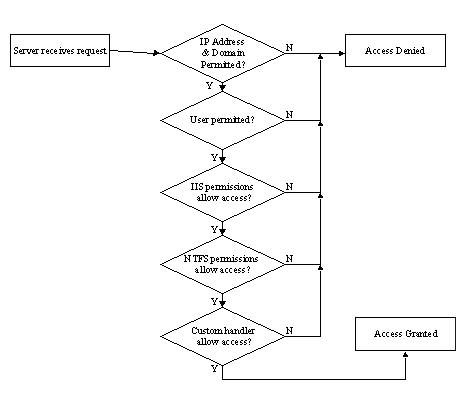

|
| ||
|
| ||
Tom Moran
Microsoft Corporation
March 31, 1998
The following article was originally published in the Site Builder Network Magazine "Servin' It Up" column (now MSDN Online Voices "Servin' It Up" column).
My plan is to cover predominantly Active Server Pages technology (ASP), Microsoft Internet Information Server (IIS) and Microsoft Site Server. However, this column is for you, so you tell me what you are most interested in.
Of course, for this first time out, I get to choose. I wanted to make this column kind of fun, and I thought I would start with some cheesy allusions to Bill Clinton and how certain request protocols are supposed to work. My editor quickly nixed that idea, so we agreed I would talk about security only. Maybe the fun comes next time, but security is awfully important, so I don't mind -- shouldn't get me in too much trouble, either. Specifically, let's start with a primer and decision-making guide. In the future, we'll spend time delving down into more specifics and implementation issues, including lots of code and examples.
Security is a wide-reaching topic -- and can get extremely complex. Don't let that stop you, because most of what you really need to know can be absorbed in bite-sized chunks and implemented in stages. When thinking about security for your site, you need to be concerned with several discrete areas , as well as a few basic concepts. Each has a set of technologies and techniques all its own, and I've included a table of some of these for each area. I will outline each of these areas, introduce a few important concepts, and give a few examples of when you might want to use each. I will also include a few links to more information, but the best place to start for any of this is the online documentation for the Windows NT® 4.0 Option Pack -- you'll notice I refer you to it several times.

Figure 1. Access permissions process
This is so fundamental, it deserves a little extra explanation. So I've included a chart.
| Anonymous | Allows anyone to view the content on your site. Anonymous, Basic, and NTLM can all be set through the same IIS dialog box using the Microsoft Management Console MMC). |
| Basic | Requires a user ID and password. Not very secure, since it is sent over the wire either as clear text or base64-encoded. Still very appropriate for some applications, and probably the most widely used authentication method. |
| Digest Authentication | Conceptually similar to Basic; however, the password is not sent over the network. Instead, a hashed version of the password is used. This is not officially supported in IIS 4.0. However, since it is a proposed part of HTTP 1.1, I though you might come across it. This may end up being a good method to use in the future, since it will likely be supported by multiple browsers and will get around some of the major problems of Basic Authentication. |
| NTLM | Also known as Windows NT Challenge/Response. The most secure of the three basic authentication methods supported by IIS. However, you must be using Internet Explorer clients to support NTLM. |
| TCP/IP addresses | Allows you to restrict access based on a user's IP Address or domain. You can programmatically restrict access according to a domain as well, but that is a much more complex option, and will be addressed in detail in an upcoming column. |
| NTFS security | Allows you to specify permissions at the file level, based on user or Windows NT group. |
| Site Server membership | Part of the Site Server product, which sits on top of NTS and IIS. Use when you need Windows NT Authentication, but want higher scalability or are on the World Wide Web, where your users may not participate in an Windows NT domain model. Ideal for a large subscription service. |
| Content Rating | Really a self-selecting type of access control that you probably have no control over. Users must configure a response to this in their browsers. |
At a high level, it is pretty simple. The server takes a request, goes through a series of checks, and then denies or grants access based on the results. Notice something about this chart? To obtain access, the user has to go through the entire chain of verification. If verification fails at any point along the way, access is immediately denied.
or "How can I tell who changed the picture of my mother-in-law to an elephant?"
More importantly, you want to prove it wasn't you. Use this ability when it is important to determine who's done what, which files or pages have been accessed, and what may have been compromised or tested. For example, if you want to know who exactly is accessing a certain file, you can set up logging that will record any access, failed or successful.
| NT Event Logs | Your basic Windows NT logs. You can log system events, such as access violations, low disk space, and so on. Check out the Event Viewer in your Administrative Tools for more information. Be careful not to audit everything, or your event log will soon become unmanageable. |
| IIS Logs | More comprehensive than the Windows NT Event log. You can determine who is accessing your site and specifically what content they looked at. Search on about logging Web site activity in your Windows NT Option Pack docs for more information. |
| Custom Logs | A COM interface allows you to create your own custom logging object and UI. Search on custom logging in your Windows NT Option Pack docs for more information. |
or "I don't want my kids getting into my bank account"
Use authentication when it is necessary to prove the identity of the user. For example, if you are creating a private financial transaction, such as a bank-balance transfer, you would secure the channel, and also ensure that whomever executed the transaction was the true owner.
| Client Certificates | These certificate values are available to ASP through the Request object. You must have a server certificate and secure connection to use client certificates. For more info, search in the MSDN Library for client certificate. Also search for enabling client certificates in your Windows NT Option Pack docs. |
| Custom | You can use Visual C++ to create ISAPI filters that can implement your own authentication scheme. For more information, just search for isapi filter on www.microsoft.com. |
or "How to make your love letters secure"
Privacy techniques ensure that nobody else has access to your secure communication. Note that posting from forms is generally not a very private way to transfer data! Microsoft's Security site  is the definitive place for information on encryption-related issues
is the definitive place for information on encryption-related issues
Data integrity methods help ensure that the data you send is the data your user receives, and vice versa. Again, financial transactions are an area illustrating the risks of corrupted data or malicious alteration. If you purchase something, you want to make sure that the amount hasn't been altered, either maliciously or through an error caused by a system going down before the transaction was completed.
Privacy and data integrity go hand in hand; if your communication is secure, then no one should be able to alter it.
| Client Certificates | Properties available through ASP and ISAPI; can be mapped directly to Windows NT accounts. |
| Encryption | Encryption is the general term used for setting up a secure channel. Find more by searching for encryption in your Windows NT Option Pack docs. To set up a secure channel, you generally need a valid server certificate. You can either make your own through Certificate Server, or request one through a third-party certificate authority. |
| SSL | Secure Sockets Layer (SSL)-specific protocol used to provide a secure channel. IIS 4.0 supports SSL 3.0. |
| PCT | Private Communication Technology (PCT) 1.0 is another protocol supported by IIS 4.0. |
| TLS | Transport Layer Security (TLS) is a protocol used primarily in messaging applications using SMTP. |
| Microsoft Transaction Server (MTS) | Now part of Windows NT and integrated with IIS, MTS allows you to easily use ASP to set up transactions around database access to create a robust transaction processing system. You can even mark an entire ASP page as transactional. There is a good article in the April MSJ Microsoft Systems Journal |
A few related concepts will affect your decision on how to secure your site:
O/S integration: Is this just another layer on the operating system, or is it able to take advantage of the native security of the operating system? The security used by IIS and FP Server extensions is integrated with Windows NT security. That means security is more robust, and has fewer points of failure.
User context: This is an important concept. Whenever someone accesses your site, he or she does so in the context of a Windows NT user. This is true even if he is anonymous, and carries forward into any applications or tasks that are launched on the visitor's behalf. This subject, which extends to such related issues as impersonation and delegation, is rather complex and the source of many access problems. Look for more specifics in a future column.
The anonymous user: Whenever someone accesses your site anonymously (because you have configured anonymous access in IIS Admin), the user is in the context of a Windows NT account called IUSR_machinename. This is important because, by using this account, and limiting its access through Windows NT, you are still able to restrict permissions to specific files (assuming you are using NTFS).
Database security: When you are doing any database work, each database may implement its own security model. For example, SQL Server has a very robust security model. However, it can also use integrated security, where it depends on Windows NT authentication mechanisms for all connections. In certain circumstances, using SQL Server security can make it easier to use a database that may be located on a separate machine. See the following resources for more information:
Run-time versus design-time security: This is primarily an issue involving Visual InterDev and FrontPage®, and is worth an entire column by itself. The idea is that you not only need to manage end-user access to your site, but also your Web application while it is under development. There is an excellent white paper by Martin Sonntag at http://www.microsoft.com/vinterdev/techmat/whitepapers/visecure.htm  .
.
Programmability: This is the ability to make custom authentication schemes or to control access programmatically. Can you hide your source code? Do you need to? Using ASP and server-side objects can help you do this. Depending on your programming background and environment, you can also modify and create Windows NT groups, modify access, and so forth.
System Integrity: This is the ability to isolate applications running on the server. Can an app crash or do damage to another app? IIS provides several ways to maintain system integrity. Process isolation means that an application failing won't bring down the entire machine and cause a reboot. IIS actually uses MTS to achieve process isolation. Bandwidth throttling, or limiting, provides the ability to limit the amount of bandwidth used in serving up static HTML pages, helping to ensure other applications do not starve for resource time.
While there are many topics to understand, there are also a lot of great resources -- the two best being the Search area on Microsoft's Web site and the Windows NT Option Pack documentation. The hardest part is figuring out what methods, acronyms, and technologies fit with each area -- and, hopefully, this column will help reduce the time you waste pursuing red herrings when you need to get your Web site working. I would love to get mail from you. Let me know what you think of this article, and what you want to see in the future, and we'll grow this column together to meet your server needs. (Put "Server" column in the subject line of your mail.)
An excellent article about security concepts and troubleshooting more specific to Visual InterDev is Authentication and Security for Internet Developers by Scott Stabbert (requires one-time registration).
Another excellent article on security is at http://www.15seconds.com/  . Look for "Advanced Security Concepts."
. Look for "Advanced Security Concepts."
For more general information on all of the topics presented, visit Web Workshop's Server Technologies section.
There are also tons of great implementation-specific articles in the Microsoft Knowledge Base  . Whenever you think you have run into a bug or need a workaround, check this resource first.
. Whenever you think you have run into a bug or need a workaround, check this resource first.
Did you find this material useful? Gripes? Compliments? Suggestions for other articles? Write us!
© 1999 Microsoft Corporation. All rights reserved. Terms of use.